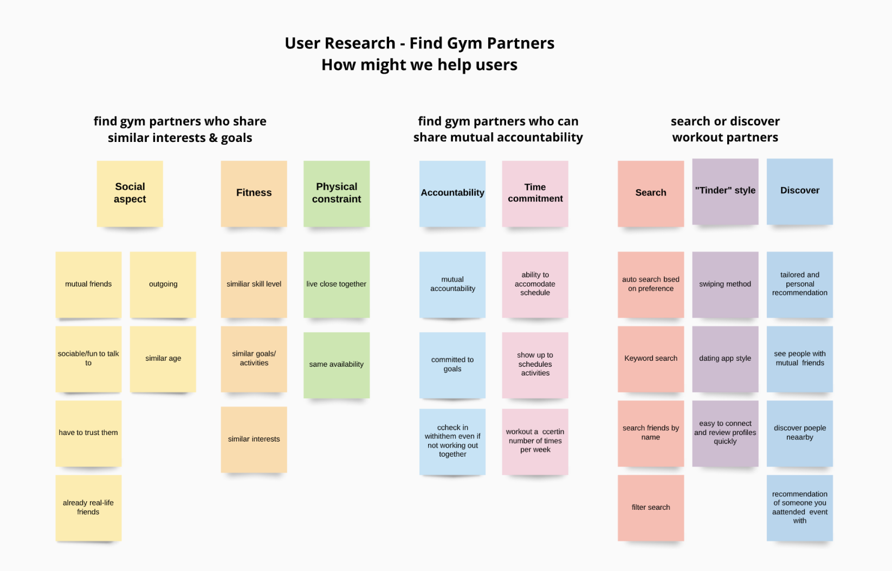
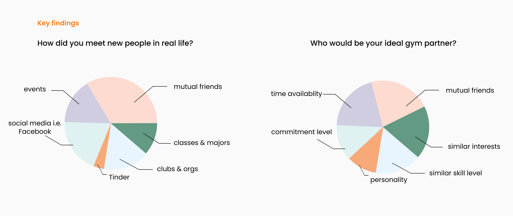
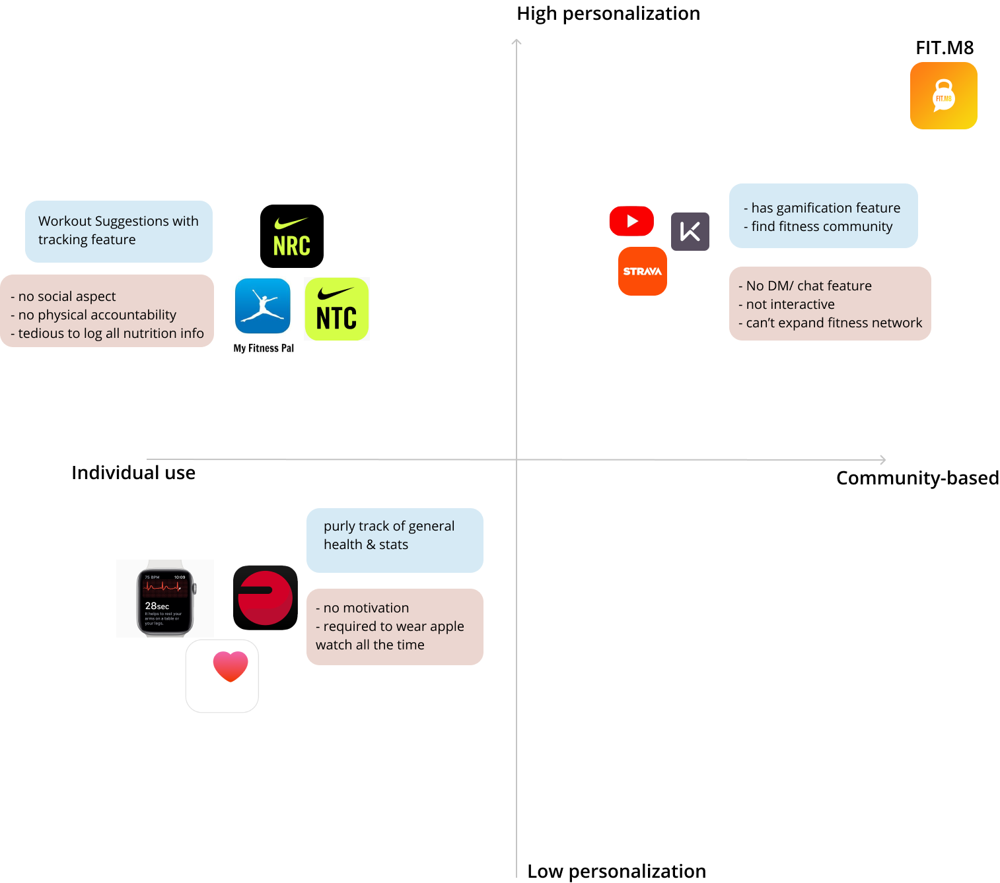
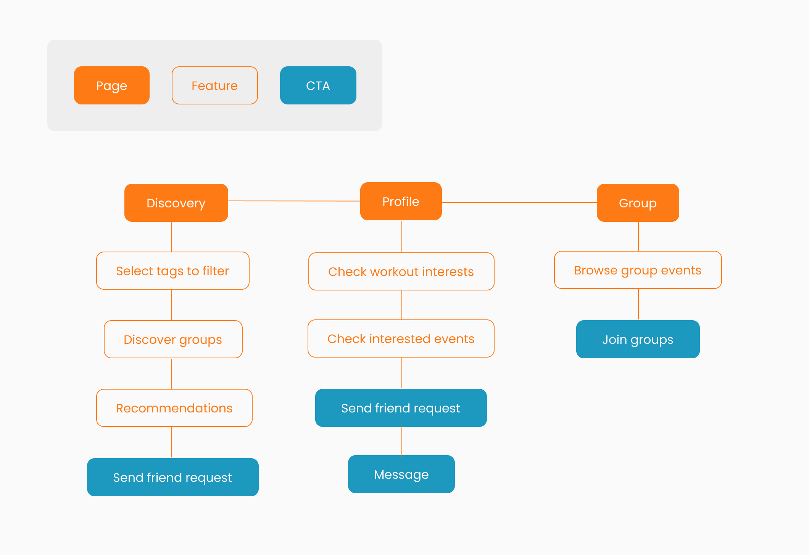
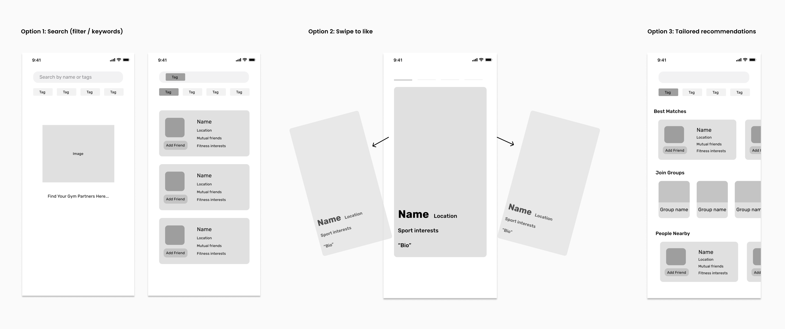
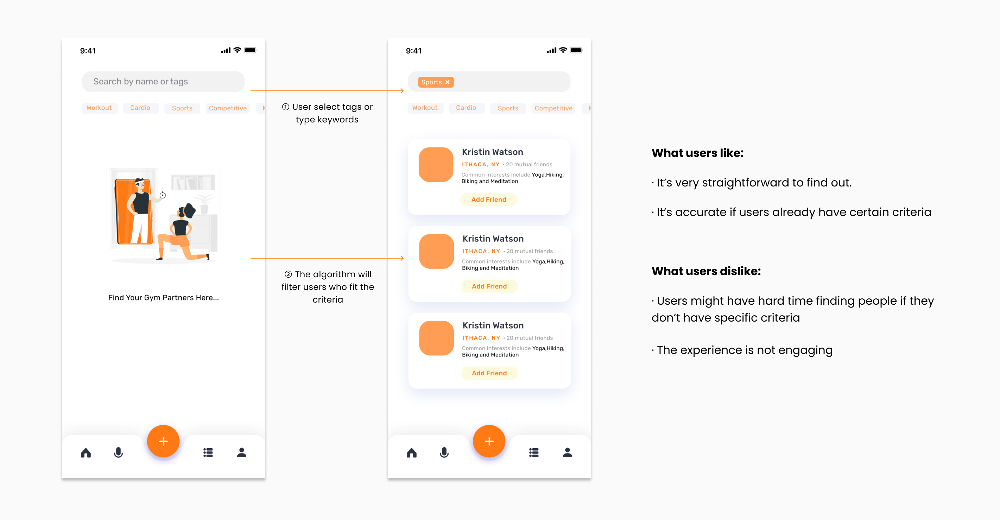
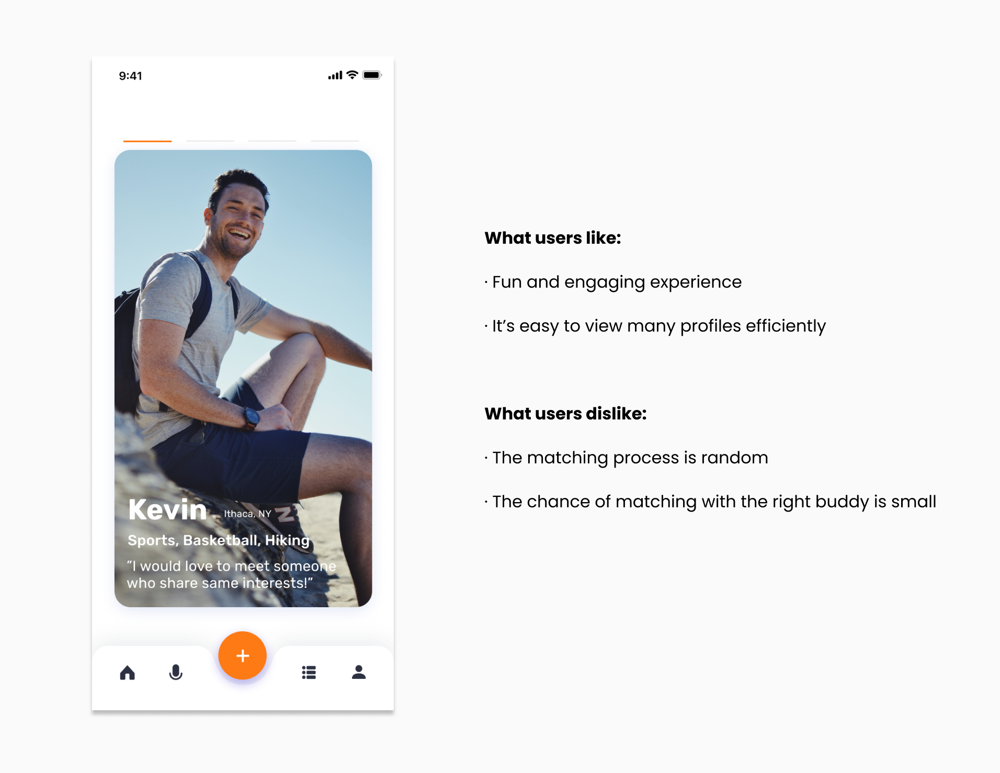
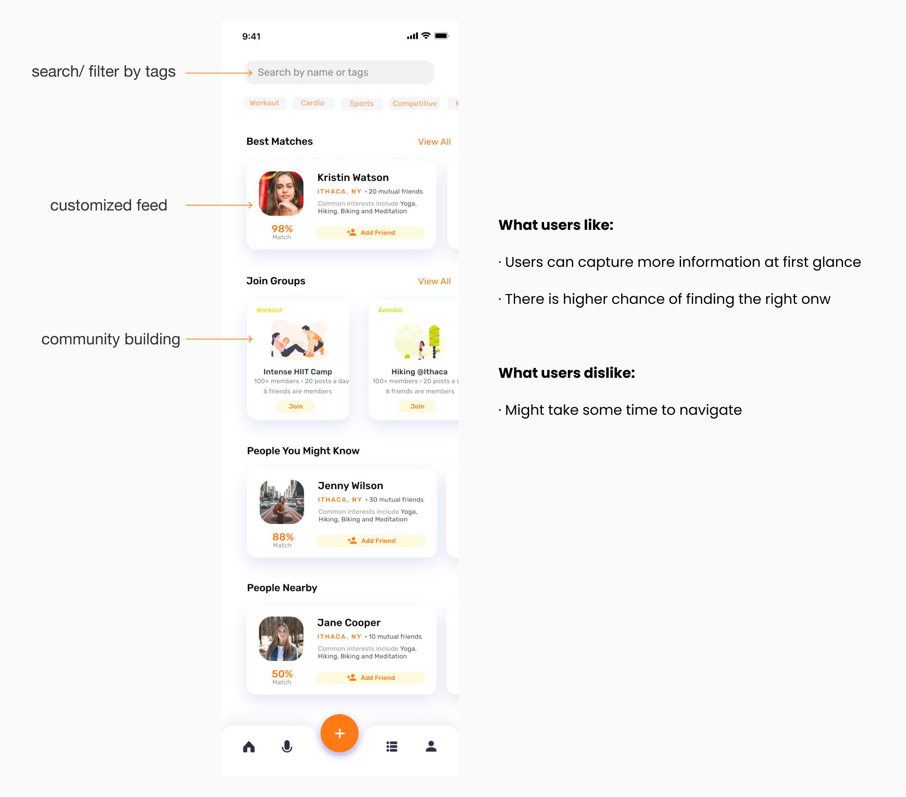

Fit.M8
Overview: I was a UX/UI design intern at Fit.M8, a social fitness app that helps college students stay fit in a supportive community.
Role: UX Design, UX Research, Visual Design
Tool Kits: Balsamiq, Figma
Timeline: Jun 2020 - Aug 2020
Team: 4 programmers, 3 designers, 2 product managers
Outcome: shipped high-fi prototype 🎉
00. Project Summary
Problem
College students want to stay motivated to work out and discover gym partners who share the same goals, habits and interests. However, their fitness network is small and it’s easy to lose motivation or accountability..
How might we expand college students’ fitness network and keep them accountable?
Solution
A social fitness app that helps college students discover and work out with ideal gym partners.
01. Research
Surveys & User Interviews
To understand college students’ current problem with keeping up their workout routine, the design team sent over 100 surveys and conducted 20+ interviews. We collected responses and created an affinity diagram to synthesize our key insights.

Competitive research
Then I looked into popular fitness apps in the current market and examined those apps in two dimensions - the degree of personalization and community belonging. Most fitness apps are tedious to use and don’t provide enough motivation in a supportive community.
Key insights
- Users want to hold themselves accountable by working out with others
- College students typically have small fitness network and have hard tie finding workout partners
- Users prefer working out with somone who share similar workout interests at same skill levels
02. Ideation
Design goal
After we synthesized key insights from research, we defined our design goals:
How might we make the discovering process efficient and fun?
User flow
Before we turned our ideas into visual layouts, we first listed the features / functions thta should be included in the user flow to meet users; needs and our design goal.
Brainstorming
Then the design team held a design sprint session and we brainstomed specific features to meet our design goal. And finally we narrowed down into three ideas ——
03. Iterations & Testing
To validate which idea would be best to meet users’ needs, I turned low-fi sketches into mid-fi wireframes and conducted usability testing sessions.
i. Search (filter / keywords)
The search method is very straightforward. Users can select tags or type certain keywords to search for other users who fit the filters. However, most users suggested that the experience is quite tedious and they don’t really know what to search.
ii. Swipe to like
Since most users said plain search is arbitary, we decided to think of a more engaging way. Inspired by Tinder, we made the discovery process like a matching game. During user testing, users have conflicting opinions - some of them said it’s really cooool but others expressed their concerns that the chance of matching the right one is slim.
iii. Curated recommendation
Then we came to the third idea. After users complete the onboarding surveys, they can explore on the discovery page which incorporates both search / filter feature and also a customized feed that the algorithm picks the best matches for users.
Final decision
We ruled out the first option and narrowed down on the last two design. To better decide, we conducted another round of user interviews and deliberated our findings and thoughts with the whole team. We eventually decided to go for the last option - curated recommendation for several reasons:
- As a social fitness app, our end goal is to help users find the “right” gym partners rather than meeting A LOT OF people
- People enjoy “swiping” because they can view many profiles in short time but that doesn’t align with our goal
- Users like information-driven feed rather than visual-driven
04. Prototype
05. Reflection
As a fitness enthusiast, I am deeply drawn to the idea of building a social fitness app that helps users stay fit by connecting them with friends who exercise. During my internship at Fit.M8, I applied what I learned in classes such as user research, UX/UI design and user testing in practice and witnessed the evolvement from a scratch idea to a final polished prototype within two months.
I learned how to adjust product features based on valuable user feedback, make trade-offs to bridge the team’s vision and users’ needs, and effectively communicate with developers and PMs to successfully deliver the final product.
Due to Non-Disclosure Agreement, I cannot disclose the full project here. Please contact me if you are interested in learning more. You can always find out more information on Fit.M8’s website and Instagram.
view other projects